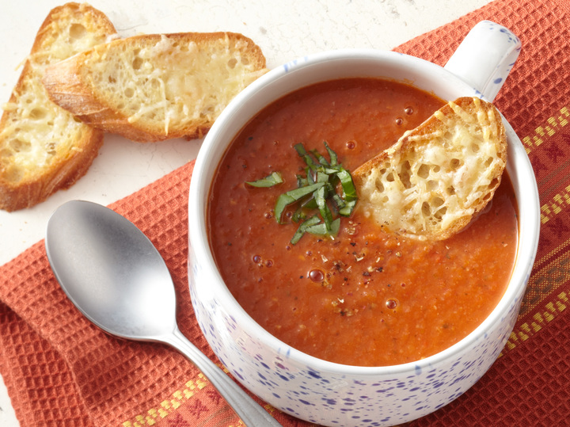

Hearty Tomato Soup Recipe

Ingredients:
- 6 ripe tomatoes, chopped
- 1 medium onion, chopped
- 2 garlic cloves, minced
- 2 tbsp olive oil
- 1 cup vegetable broth
- 1 tsp sugar
- Salt and pepper to taste
- Fresh basil leaves, chopped
- 1/2 cup heavy cream (optional)
Instructions:
- Heat olive oil in a pot over medium heat. Add onions and garlic, sautéing until fragrant.
- Add chopped tomatoes, vegetable broth, sugar, salt, and pepper to the pot. Bring to a boil.
- Reduce the heat and simmer for 20-25 minutes, stirring occasionally.
- Once the tomatoes have softened, use an immersion blender to puree the soup until smooth.
- If desired, stir in the heavy cream for a richer texture.
- Serve hot, garnished with fresh basil leaves.